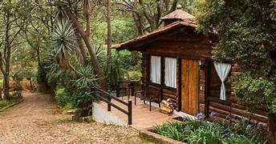

Mazamitla, ubicado en el estado de Jalisco, es un encantador pueblo mágico que te espera con los brazos abiertos para ofrecerte una experiencia única en medio de la belleza natural y la cultura mexicana. Con su arquitectura pintoresca, bosques exuberantes y un ambiente relajado, Mazamitla es el destino perfecto para una escapada tranquila o una emocionante aventura al aire libre.
Mazamitla se encuentra a aproximadamente 120 kilómetros al sur de Guadalajara, la capital de Jalisco. Puedes llegar en automóvil o tomar un autobús desde Guadalajara.
Desde cabañas rústicas hasta hoteles boutique, Mazamitla ofrece una amplia gama de opciones de hospedaje para satisfacer tus necesidades y presupuesto.
